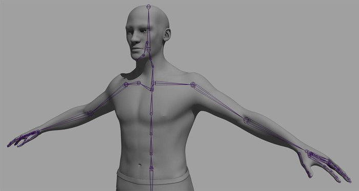
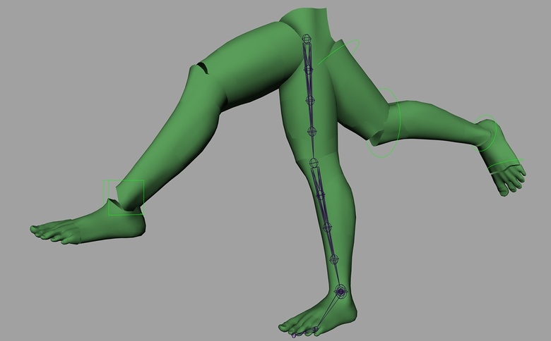

 Maya rigging: Introduction to rigging
Maya rigging: Introduction to rigging a human torso
Maya rigging: Introduction to rigging the neck and the head
Maya rigging: Introduction to rigging the shoulder and the arms
Maya rigging: Introduction to rigging the hands
 Maya rigging: Introduction to rigging the legs
Maya rigging: Introduction to rigging the feet
Maya rigging: Introduction to rigging the fingers and thumbs
Maya rigging: Introduction to cleaning up the rig
Maya rigging: Introduction to skinning